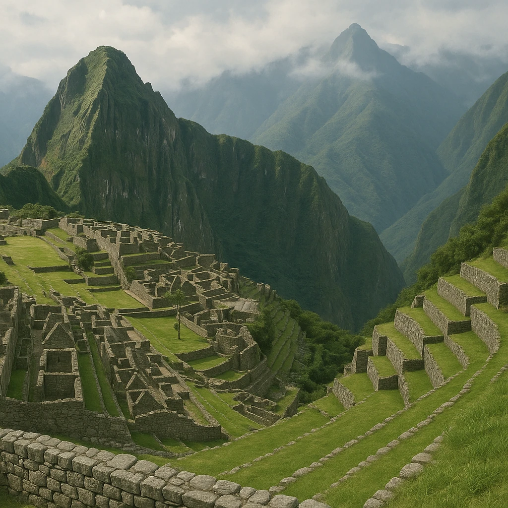
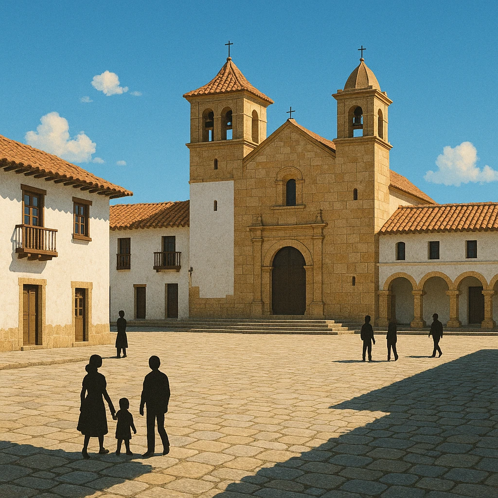
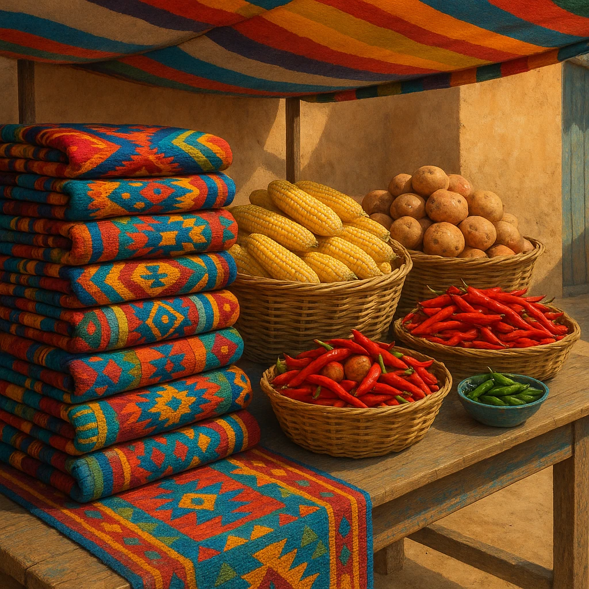

Ⅲ-1
占領の歴史
先住民の帝国が、ヨーロッパ人に
占領
された

15世紀
先住民の文明
古くからの先住民が、
インカ帝国
などの文明を築いていた。
→

16世紀
占領される
スペイン
と
ポルトガル
が、ほとんどの地域を占領した。
→

その後
混血が進む
先住民とヨーロッパ人の
混血
が進み、多様な人々の社会が生まれた。
★頻出
：占領した2国は①と②。だから今も、南アメリカの多くの国は
①の言葉
、ブラジルだけ
②の言葉
を話す。
第8章 南アメリカ州
SEED EDUCATION